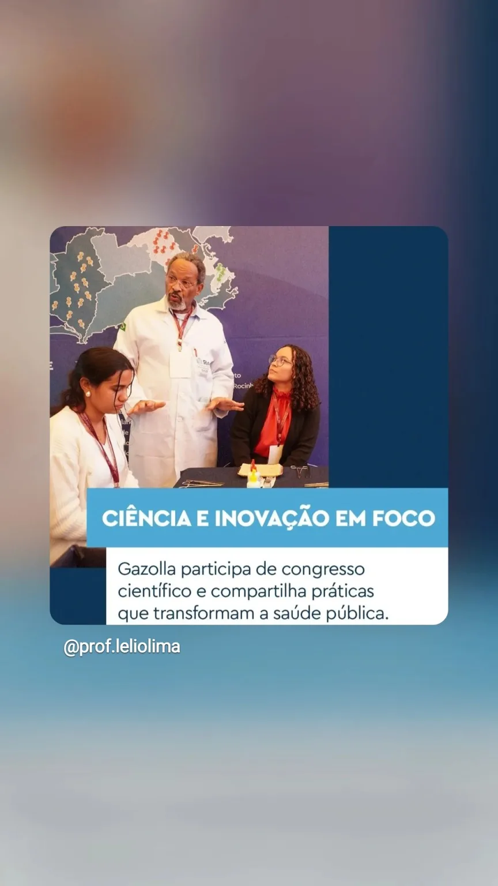
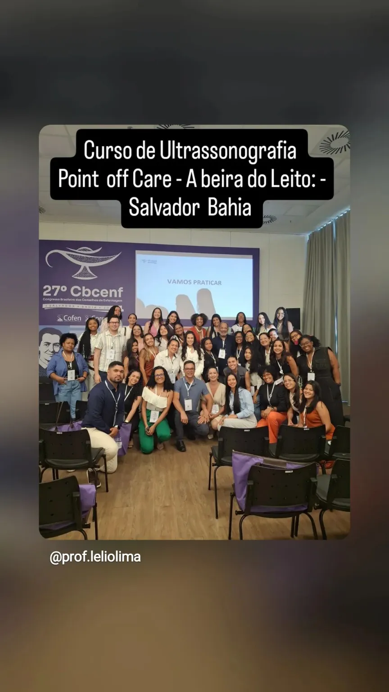

Formação acadêmica
1995 — A Base na UERJ
Graduação em Enfermagem Médico-Cirúrgica pela UERJ. O início de uma jornada focada na excelência científica.
Formação especializada • Educação em saúde
Especializações e cursos para profissionais e estudantes que desejam aprofundar conhecimentos em terapia intensiva, cardiologia e cuidado à beira do leito.

Sobre o professor
O Prof. Lélio Lima atua na educação em saúde e na direção da Ictus Cordis, aproximando atualização científica, formação continuada e aplicação prática.
Experiência que sustenta o ensino
Uma jornada construída entre formação acadêmica, atendimento crítico, prática assistencial, ciência e educação em saúde.
Graduação em Enfermagem Médico-Cirúrgica pela UERJ. O início de uma jornada focada na excelência científica.
Atuação extrema como Oficial do Corpo de Bombeiros Militar do RJ no GSE (Grupo de Socorro de Emergência). Anos salvando vidas nas ruas e dominando o atendimento pré-hospitalar crítico.
Consolidação técnica com as Especializações em Terapia Intensiva (UERJ) e Cardiologia (UGF). O domínio total do paciente crítico e da semiologia cardiovascular.
Palestrante e conferencista em grandes congressos de saúde (como o Congresso de Cardiologia da SOCERJ), ditando protocolos de classificação de risco e manejo cardiovascular.
Criação do polo educacional em parceria com a UniRedentor (Grupo Afya), focado no ensino sem neura e na prática real, somando hoje mais de 6,5 mil alunos conectados.
Formações
Converse com a equipe para confirmar calendário, modalidade, vagas e condições da próxima turma.
CIÊNCIA & INOVAÇÃO
A formação profissional ganha mais valor quando acompanha a evolução da ciência e mantém contato com situações reais da assistência.
Conteúdo real
Registros reais da trajetória do professor, das turmas e dos conteúdos compartilhados com profissionais da saúde.

Encontro com profissionais da saúde durante o 27º CBCENF.

QUERO ESTUDAR
Escolha a área de interesse e deixe seu contato. A equipe poderá retornar com informações sobre novas turmas, valores, modalidade e disponibilidade.
Informe o curso ou especialização.
Nome, WhatsApp e e-mail.
Converse com a equipe pelo WhatsApp.
Dúvidas frequentes
Datas, horários e condições são confirmados pela equipe conforme a abertura de cada turma.
PRÓXIMO PASSO
Entre para a lista de interessados ou fale diretamente pelo WhatsApp.